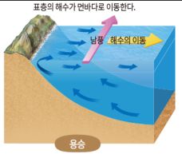
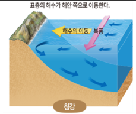
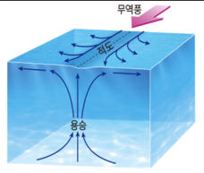
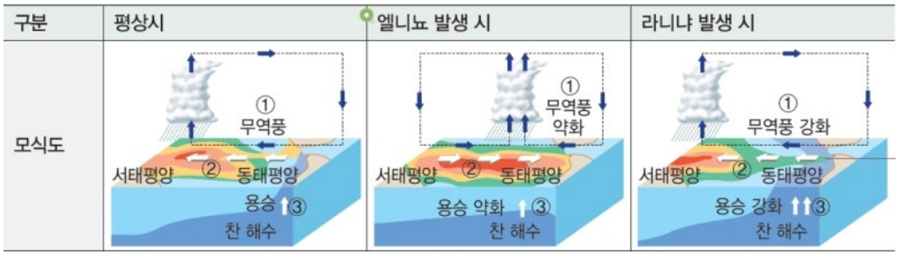
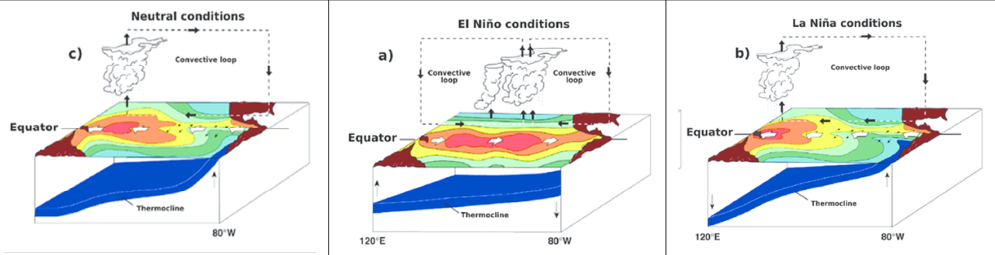
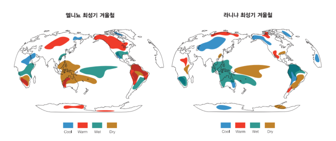

학습 목표 (Learning Objectives)
- ✓바람과 전향력에 의한 해수의 용승과 침강 원리를 설명할 수 있다.
- ✓엔소(ENSO: 엘니뇨와 남방진동)의 진행 과정과 동·서태평양의 관측 자료 편차를 비교·해석할 수 있다.
핵심 개념 체크리스트
학습을 마친 개념은 직접 체크해보세요!
2026 사대부고 고2 지구과학 자체 교재 원문 기반
동기 유발 · 생각해보기
수업 시작 전 핵심 질문
Q. '애그플레이션(Agflation)'이라는 단어를 들어보았는가? 최근 적도 동태평양의 수온이 평년보다 상승하면서 우리가 마시는 커피 원두와 설탕 가격이 급등했다는 뉴스가 나왔다. 왜 태평양 바다의 수온 변화가 전 세계 농산물 가격까지 뒤흔드는 것일까?

💡 먼저 스스로 이유를 추론해 본 뒤 버튼을 눌러 확인해보세요!
✨ 과학적 해설 및 모범 답안
해양과 대기는 끊임없이 열과 수증기를 주고받으며 상호작용합니다. 적도 태평양의 수온이 변하는 엘니뇨·라니냐(ENSO)가 발생하면 대기의 거대한 순환인 워커 순환이 변형되어, 남아메리카·동남아시아·호주 등 주요 커피 및 곡물 생산지에 극심한 가뭄이나 홍수를 일으켜 작황이 급감하기 때문입니다.
핵심 개념 1
1. 해수의 용승과 침강 (Upwelling & Downwelling)
(1) 연안 용승, 연안 침강, 적도 용승의 원리
- •에크만 수송: 바람이 지속적으로 불 때 지구 자전(전향력)의 영향으로 표층 해수는 북반구에서는 바람 방향의 오른쪽 직각($90^\circ$) 방향, 남반구에서는 왼쪽 직각 방향으로 이동한다.
- •연안 용승 (우리나라 동해안 여름철): 북반구 동해안에서 지속적으로 남풍(또는 남동풍)이 불면 표층 해수가 외해(동쪽)로 밀려 나가고, 빈자리를 채우기 위해 심층의 차가운 해수가 표층으로 올라오는 용승이 발생한다.
- •적도 용승: 북반구 북동 무역풍(오른쪽인 북쪽으로 해수 이동)과 남반구 남동 무역풍(왼쪽인 남쪽으로 해수 이동)에 의해 적도 표층 해수가 양쪽으로 발산하므로 적도를 따라 심층의 찬 해수가 용승한다.
- •용승 해역의 특징: 주변보다 표층 수온이 낮아 안개나 냉해가 발생할 수 있으며, 심층의 풍부한 영양염류와 용존 산소가 공급되어 플랑크톤이 번성하고 좋은 어장이 형성된다.

" class="max-h-72 w-auto object-contain rounded-lg group-hover:scale-[1.02] transition duration-300 cursor-zoom-in" onclick="openLightbox(this.src, '교재 그림: <연안 용승 (북반구 동해안 남풍)>')" loading="lazy" />
" class="max-h-72 w-auto object-contain rounded-lg group-hover:scale-[1.02] transition duration-300 cursor-zoom-in" onclick="openLightbox(this.src, '교재 그림: <연안 침강 (북반구 동해안 북풍)>')" loading="lazy" />
" class="max-h-72 w-auto object-contain rounded-lg group-hover:scale-[1.02] transition duration-300 cursor-zoom-in" onclick="openLightbox(this.src, '교재 그림: <무역풍에 의한 적도 용승>')" loading="lazy" />
핵심 개념 2
2. 엘니뇨, 라니냐와 남방진동 (ENSO)
(1) 평상시 vs 엘니뇨 vs 라니냐의 워커 순환 비교
- •평상시: 무역풍(동풍)이 적도 동태평양의 따뜻한 표층 해수를 서태평양으로 이동시킨다. ➔ 서태평양(인도네시아)은 수온이 높고 저기압(상승 기류, 강수 풍부)이 발달하며, 동태평양(페루 연안)은 찬 해수의 용승이 활발하여 수온이 낮고 고기압(하강 기류, 건조, 좋은 어장)이 나타난다.
- •엘니뇨 (El Niño): 무역풍이 평상시보다 약화 ➔ 따뜻한 해수의 서쪽 이동 감소 및 동태평양 용승 약화 ➔ 동태평양 표층 수온 상승(+) ➔ 상승 기류(저기압) 구역이 중앙·동태평양으로 이동하여 동태평양에 홍수/폭우, 서태평양에 가뭄/산불 발생
- •라니냐 (La Niña): 무역풍이 평상시보다 강화 ➔ 따뜻한 해수가 서쪽으로 더 많이 밀려가고 동태평양 용승 강화 ➔ 동태평양 표층 수온 하강(-) ➔ 평상시 순환이 더욱 강해져 서태평양에 폭우/홍수, 동태평양에 가뭄과 한파 발생

" class="max-h-72 w-auto object-contain rounded-lg group-hover:scale-[1.02] transition duration-300 cursor-zoom-in" onclick="openLightbox(this.src, '교재 그림: <평상시와 엘니뇨·라니냐 발생 과정>')" loading="lazy" />
" class="max-h-72 w-auto object-contain rounded-lg group-hover:scale-[1.02] transition duration-300 cursor-zoom-in" onclick="openLightbox(this.src, '교재 그림: <평상시 · 엘니뇨 시기 · 라니냐 시기의 워커 순환과 수온약층 모식도>')" loading="lazy" />
" class="max-h-72 w-auto object-contain rounded-lg group-hover:scale-[1.02] transition duration-300 cursor-zoom-in" onclick="openLightbox(this.src, '교재 그림: <엘니뇨 시기의 전 지구적 기상 이변>')" loading="lazy" />(2) ⭐ 수능·내신 핵심! 엘니뇨 vs 라니냐 자료 해석 비교표 (교재 p.25)
- •편차(Anomaly)의 정의: $\text{편차} = \text{관측값} - \text{평년값(평상시 값)}$
- •엘니뇨 문제는 주어진 그래프나 등치선도가 엘니뇨인지 라니냐인지 먼저 판별하면 모든 보기가 자동으로 풀린다!
| 비교 항목 (적도 태평양) | 엘니뇨 시기 (무역풍 약화) | 라니냐 시기 (무역풍 강화) |
|---|---|---|
| 동태평양 표층 수온 편차 (℃) | (+) 평상시보다 수온 높음 | (-) 평상시보다 수온 낮음 |
| 동태평양 해면 기압 편차 (hPa) | (-) 상승 기류 발달로 기압 낮음 (폭우) | (+) 하강 기류 강화로 기압 높음 (가뭄) |
| 서태평양 해면 기압 편차 (hPa) | (+) 하강 기류로 기압 높음 (가뭄) | (-) 상승 기류 강화로 기압 낮음 (폭우) |
| 남방진동지수 (타히티 기압 - 다윈 기압) | (-) 음의 값 | (+) 양의 값 |
| 동서 방향 해수면 높이 차 (기울기) | 평상시보다 작아짐 (완만) (동태평양 해수면 상승) | 평상시보다 커짐 (급함) (서태평양 해수면 더욱 상승) |
| 동태평양 수온약층 시작 깊이 | 용승 약화로 깊어짐 (따뜻한 혼합층 두꺼워짐) | 용승 강화로 얕아짐 (찬 심층수가 표층 가까이 상승) |
| 동태평양 표층 용존 산소량 및 영양염류 | 용승 약화·수온 상승으로 감소 (-) (어획량 급감) | 용승 강화·수온 하강으로 증가 (+) (어장 활성화) |
Interactive Checkpoints
클릭하면 교재 빈칸 정답과 해설이 나타납니다
단원 개념 적용하기 & 확인 문제
Q1
교재 p.23 확인: 여름철 우리나라 동해안에서 남풍 계열의 바람이 계속 불 때 표층 수온이 급격히 낮아지는 이유를 설명하시오.
모범 답안 및 해설
남풍이 지속적으로 불면 전향력에 의한 에크만 수송으로 표층 해수가 바람 방향의 오른쪽인 동쪽(외해)으로 밀려 나갑니다. 그 빈자리를 채우기 위해 심층의 찬 해수가 올라오는 연안 용승이 일어나기 때문입니다.
Q2
교재 p.25 문제 풀이 Tip: 적도 동태평양 해역에서 '수온약층이 시작되는 깊이가 평년보다 깊어지고, 해면 기압 편차가 (-)값'으로 관측되었다면 이 시기는 언제이며, 서태평양(인도네시아)에는 어떤 날씨가 나타나는가?
모범 답안 및 해설
동태평양 용승이 약화되어 수온약층이 깊어지고 저기압이 발달한 엘니뇨 시기입니다. 이 시기 서태평양(인도네시아)에서는 평상시의 상승 기류가 약화되고 고기압 편차가 나타나 강수량이 줄어들며 가뭄과 산불 피해가 발생합니다.